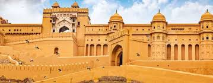

The pink city and the capital of Rajasthan is largest in the state. Founded by Maharaja Sawai Jai Singh in 1727, Jaipur is one of the most popular places to see in Rajasthan and even in India, for that matter. Long list of historic and heritage monuments, swift connectivity from major cities and an amazing city plan where all the streets of the city run from east to west – Jaipur is a marvel to be at.
Historic places include:

Amer Fort
•Best time to visit: November to February
•Timings: 9 AM-4:30 PM
•Entry Fee: INR 200 foreigner, INR 25 Indians
Jal Mahal
•Best time to visit: October to January
•Timings: 11 AM-10:30 PM
•Entry Fee: INR 10 Indians, INR 50 foreigner

Hawa Mahal
Best time to visit: October to February
Timings: 9 AM-4:30 PM
Entry fee: INR 50 Indians, INR 200 foreigners
City Palace
Best time to visit: October to March
Timings: 9:30 AM-5 PM
Entry fee: INR 35 Indians, INR 150 foreigners
Excited to visit??
Book your passes now!